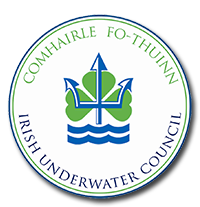

Want to join a scuba club in Ireland?
Rather than this website trying to maintain the latest information on all the clubs in Northern Ireland and the Republic of Ireland, listed below are the three main organisations, and their websites, which clubs belong to and their contact details:

The Irish Underwater Council